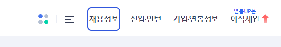

사람인 웹 접근성 퀴즈
Q4. 다음 중 접근성 대응이 잘못 된 것을 고르세요.
- *포커스 표시기
- 다음 화면과 같이 키보드 사용자가 현재 어느 위치를 탐색하고 있는지 표시하는 표시기

풀이 결과
아쉽지만 틀렸어요 ㅠㅠ
정답은 3, 4 입니다.
📢 더 알아보기
텍스트가 아닌 비텍스트 콘텐츠(이미지, 영상 등)에 대해서는 시각 장애를 가진 사용자는 접근할 수 없고, 소리가 나는 콘텐츠는 청각 장애를 가진 사용자는 들을 수 없기 때문에 텍스트 형태의 동등한 수준의 대체 정보를 제공해야 합니다.
색각 장애를 가진 사용자는 서로 다른 색상을 구분하는데 어려움을 가지기 때문에 색상에 의존하지 않은 다른 대체 수단이 필요합니다. 서로 다른 모양, 크기, 굵기 등이 이러한 문제를 해결할 수 있습니다.
🔎 더 자세히 알고 싶다면?